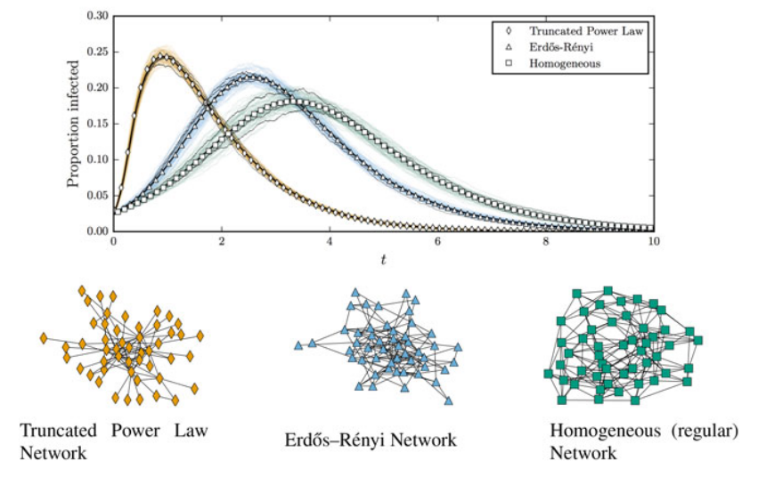
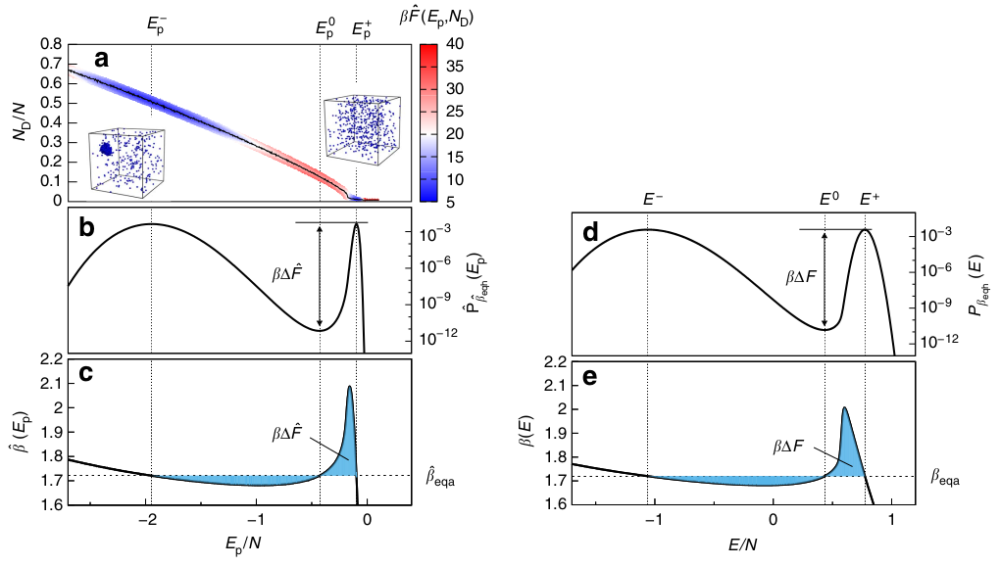

Monte Carlo Methoden in der Modellierung von Krankheitsausbrüchen
Johannes Zierenberg
Max Planck Institute for Dynamics and Self-Organization, Göttingen, Germany
Max Planck Institute for Dynamics and Self-Organization, Göttingen, Germany
Warum sollten wir Krankeitsausbrüche modellieren?


Keeling et al., Nature (2003)
Brockmann & Helbig, Science (2013)
Dehning et al., Science (2020)
Maier & Brockmann, Science (2020)
Li et al., Science (2020)
Krankheitsverlauf eines Individuum

Cevik et al., BMJ (2020).
Krankheitsverbreitung in einer Gesellschaft
Kiss, Miller & Simon, Mathematics of Epidemics on Networks (2017)
Wo ist das Problem?
Mögliche Ansätze:
Inferenz
Stochastische Simulationen
Monte Carlo 101
Inferenz Krankheitsparameter
Simulation stochastischer Krankheitsausbreitung
Monte Carlo 101
Dehning et al., Science (2020)
Source: https://www.nasa.gov/specials/apollo50th/missions.html
Source: https://corporatefinanceinstitute.com/resources/knowledge/modeling/monte-carlo-simulation/
Source: wikipedia
Zierenberg et al., Nat. Commun. (2017)
Monte Carlo 101: Ein Beispiel
Wir können aus diesen Daten jetzt verschiedene Informationen bestimmen
Mittelwert:
$\overline{x} = \sum X P(x) \approx 23.8$
Varianz:
$\overline{\left(x-\overline{x}\right)^2} = \sum X^2 P(x) - \overline{x}^2 \approx 7.03$
Fehler des Mittelwertes:
Varianz/$\sqrt{N} \approx 1.2 $


iid: independent and identically distributed
Source: wikipedia

Source: wikipedia
Gross et al., Comput. Phys. Commun. (2018)
Metropolis et al., J. Chem. Phys. (1953)
Zierenberg et al., Europhys. Lett. (2015)
Zierenberg et al., Nat. Commun. (2017)


Wang et al., Nat. Commun. (2020)
Iwata et al., Int. J. Infect. Dis. (2020)
Flaxman et al., Nature (2020)
Dehning et al., Science (2020)
Li et al., Science (2020)
 $\frac{dS}{dt} = -\lambda\frac{S}{N} I\phantom{+\mu I}$
$\frac{dS}{dt} = -\lambda\frac{S}{N} I\phantom{+\mu I}$
$\frac{dI}{dt} = \left(\lambda\frac{S}{N} -\mu \right)I$
$\frac{dS}{dt} = -\lambda\frac{S}{N} I\phantom{+\mu I}$
$\frac{dI}{dt} = \left(\lambda\frac{S}{N} -\mu \right)I$
$\theta = (\lambda, \mu, I_0)$

Dehning et al. Science (2020)
Dehning et al. Science (2020)
Dehning et al. Science (2020)
Leave-One-Out model comparison:
Der Vergleich zwischen verschiedenen Modellen (0,1,2,3 CPs) schloss 0/1 CPs aus und favorisierte 3 CP Modell. Reporting delay hat mindestens drei Beiträge: * biologische Inkubationszeit (5-6 days$^1$) * Verzögerung zwischen ersten Symptomen und solchen die einen Test motivieren (1-2 days) * Verzögerung zwischen Test und Ergebnis (1-2 days) March 9, 2020:
Absage von Großveranstaltungen mit mehr als 1000 Teilnehmer. March 16, 2020:
Schließung von Schulen, Kinderbetreuung und der Mehrheit der Geschäfte. March 23, 2020:
Kontaktsperre und Schließung von allen nicht-relevanten Geschäften.
$^1$Lauer et al. Ann Intern Med (2020)
Dehning et al. Science (2020)
Dehning et al. Science (2020)
Dehning et al. Science (2020)


Gillespie, Annu. Rev. Phys. Chem. (2007)


https://github.com/benmaier/epipack#examples


Cevik et al., BMJ (2020).
Mittelwert:
$\overline{x} = \sum X P(x) \approx 23.8$
Varianz:
$\overline{\left(x-\overline{x}\right)^2} = \sum X^2 P(x) - \overline{x}^2 \approx 7.03$
Fehler des Mittelwertes:
Varianz/$\sqrt{N} \approx 1.2 $
Monte Carlo 101: Simple sampling
In unserem Beispiel war das Alter die Zufallsvariable und die
anwesenden Studenten waren unabhängige Realisierungen. Wir haben
also (mehr oder weniger) zufällig aus der Verteilung aller
Studenten gezogen.
Simple sampling:
Zufälliges erzeugen von Samples aus der Verteilung möglicher Realisierungen.
Zufälliges erzeugen von Samples aus der Verteilung möglicher Realisierungen.
Simple sampling ist super, wenn man an dieser Verteilung interessiert ist
Monte Carlo 101: Gesetz der großen Zahlen
Gesetz der großen Zahlen:
Das arithmitsche Mittel aus unabhängig und identisch verteilten (iid) Zufallsvariablen konvergiert zu deren Erwartungswert
Wir können also folgende Approximation verwenden $\mathbb{E}(X)\approx \overline{x}=\frac{1}{N}\left(x_1+x_2+...+x_N\right)$.
Das arithmitsche Mittel aus unabhängig und identisch verteilten (iid) Zufallsvariablen konvergiert zu deren Erwartungswert
Wir können also folgende Approximation verwenden $\mathbb{E}(X)\approx \overline{x}=\frac{1}{N}\left(x_1+x_2+...+x_N\right)$.
iid: independent and identically distributed
Source: wikipedia
Monte Carlo 101: $\pi$ berechnen
Die Kreiszahl $\pi$ für einen Kreis mit Radius 1 entspricht genau der Kreisfläche:
$A = \pi r^2=\pi$
Für zufällige Samples ($x\in[0,1]$, $y\in[0,1]$) liegt ein Teil der Samples im Kreis, und ein Teil außerhalb:
$\frac{\text{Samples im TeilKreis}}{\text{Samples Gesamt}} = \frac{A_\text{TeilKreis}}{A_\text{Quadrat}}=\frac{\pi}{4}$
Was wir auch schreiben können als $\pi = 4\mathbb{E}_{xy}\left(\Theta\left(1 - x^2 - y^2\right)\right)$
$\phantom{\pi} \approx \frac{4}{N}\sum_{i=1}^N \Theta\left(1 - x_i^2 - y_i^2\right)$
$x$, $y$ uniform verteilt in $[0,1]$
$A = \pi r^2=\pi$
Für zufällige Samples ($x\in[0,1]$, $y\in[0,1]$) liegt ein Teil der Samples im Kreis, und ein Teil außerhalb:
$\frac{\text{Samples im TeilKreis}}{\text{Samples Gesamt}} = \frac{A_\text{TeilKreis}}{A_\text{Quadrat}}=\frac{\pi}{4}$
Was wir auch schreiben können als $\pi = 4\mathbb{E}_{xy}\left(\Theta\left(1 - x^2 - y^2\right)\right)$
$\phantom{\pi} \approx \frac{4}{N}\sum_{i=1}^N \Theta\left(1 - x_i^2 - y_i^2\right)$
$x$, $y$ uniform verteilt in $[0,1]$
Source: wikipedia
Monte Carlo 101: Wenn Samples noch gewichtet werden müssen
Meistens sind wir an Verteilungen interessiert aus denen wir nicht direkt ziehen können.
Beispiel 1: Mittleres Alter von Physikstudenten
Wenn wir nicht wissen, wer alles Physik studiert, müssten wir eigentlich zufällige Samples aus der Bevölkerung ziehen und diese erst auf Physikstudenten überprüfen: $$ P(\text{alter} | \text{student}) \propto P(\text{student} | \text{alter}) \cdot P(\text{alter}) $$ Praktisch bedeutet dies, dass wir Zustände erzeugen und nur diese behalten, die Physikstudenten sind.
Wenn wir nicht wissen, wer alles Physik studiert, müssten wir eigentlich zufällige Samples aus der Bevölkerung ziehen und diese erst auf Physikstudenten überprüfen: $$ P(\text{alter} | \text{student}) \propto P(\text{student} | \text{alter}) \cdot P(\text{alter}) $$ Praktisch bedeutet dies, dass wir Zustände erzeugen und nur diese behalten, die Physikstudenten sind.
Beispiel 2: Statistische Mechanik
In der Physik können wir in der Regel zufällige Zustände erzeugen, müssen diese aber noch mit dem "Ensemblegewicht" gewichten $$ P_\mathrm{can}(E) = P(E|NVT) = e^{-\beta E}\Omega(E)/Z $$
In der Physik können wir in der Regel zufällige Zustände erzeugen, müssen diese aber noch mit dem "Ensemblegewicht" gewichten $$ P_\mathrm{can}(E) = P(E|NVT) = e^{-\beta E}\Omega(E)/Z $$
Zustandsdichte des Ising Modells
Gross et al., Comput. Phys. Commun. (2018)
Monte Carlo 101: Importance sampling (Markov chain)
Ziel: Erzeuge samples aus einer gewünschten Verteilung $P(x) \propto W(x)\Omega(x)$
Statistische Mechanik: $P(E) = e^{-\beta E}\Omega(E)/Z$
Idee: Erzeuge neues sample aus dem Alten sodass $P(x)$ stationär bleibt (Markov chain)
Statistische Mechanik: $P(E) = e^{-\beta E}\Omega(E)/Z$
Idee: Erzeuge neues sample aus dem Alten sodass $P(x)$ stationär bleibt (Markov chain)
$$\dot{P}(x,t) = \int dx^\prime \left[P(x^\prime)p(x^\prime\to x) - P(x)p(x\to x^\prime)\right] \overset{!}{=}0$$
Detailed balance:
$\hspace{2em}P(x^\prime)p(x^\prime\to x) = P(x)p(x\to x^\prime) \to \frac{p(x\to x^\prime)}{p(x^\prime\to x)}= \frac{P(x^\prime)}{P(x)}$
Lösung: $\hspace{10em}p(x\to x^\prime) = \text{min}\left(1,\frac{P(x^\prime)}{P(x)}\right)$ $\hspace{13em}\phantom{p(x\to x^\prime)} = \text{min}\left(1,e^{-\beta\Delta E}\right)$ [Metropolis]
Nachteil: Wir haben statistische Unabhängigkeit der samples verloren.
Lösung: $\hspace{10em}p(x\to x^\prime) = \text{min}\left(1,\frac{P(x^\prime)}{P(x)}\right)$ $\hspace{13em}\phantom{p(x\to x^\prime)} = \text{min}\left(1,e^{-\beta\Delta E}\right)$ [Metropolis]
Nachteil: Wir haben statistische Unabhängigkeit der samples verloren.
Metropolis et al., J. Chem. Phys. (1953)
Monte Carlo 101: Markov chain - Konvergenz
Bei importance sampling (Markov chain Monte Carlo) ist das erste Sample
in der Regel nicht eines mit hohem Gewicht ($P(x_0)\ll P_\mathrm{max}$).
Da die Markov chain korreliert ist, müssen wir also die ersten samples verwerfen.
In der Regel schaut man sich dafür das Konvergenzverhalten an bzw. schätzt die Autokorrelationszeit der Markov chain ab.
In der Regel schaut man sich dafür das Konvergenzverhalten an bzw. schätzt die Autokorrelationszeit der Markov chain ab.
Monte Carlo 101: Markov chain - Ergodizität
Bei importance sampling (Markov chain Monte Carlo) ist eine gute
Kombination von "updates" (Vorschlag $x\to x^\prime$) maßgeblich.
Beispiel: $x^\prime = x + (-1 + 2r)\Delta x \qquad r \in [0,1) $
Kleines $\Delta x \to $ hohe Annahmewahrscheinlichkeit.
Wir bleiben leichter innerhalb von dem Maximum der Verteilung.
Allerdings könnten wir bei kleinen $\Delta x$ ganze Bereiche des
Zustandsraumes verpassen. Der Algorithmus wäre dann nicht mehr
ergodisch.
(eine) Lösung:
$$
x^\prime_1 = x + (-1 + 2r)\Delta x_1 \qquad r \in [0,1)\\
x^\prime_2 = x + (-1 + 2r)\Delta x_2 \qquad r \in [0,1)
$$

Zierenberg et al., Europhys. Lett. (2015)
Zierenberg et al., Nat. Commun. (2017)
Monte Carlo 101: Was haben wir gelernt?
Monte Carlo 101
Inferenz Krankheitsparameter
Simulation stochastischer Krankheitsausbreitung
Parameterinferenz für deterministische Modelle
Inference: Was wurde für COVID-19 gemacht?
Wang et al., Nat. Commun. (2020)
Iwata et al., Int. J. Infect. Dis. (2020)
Flaxman et al., Nature (2020)
Dehning et al., Science (2020)
Li et al., Science (2020)
Inference: Ein einfaches mathematisches Modell
Susceptible
Infected
Recovered
$\lambda$
spreading rate
$\mu$
recovery rate
Differentialgleichung:
$$
\frac{dS}{dt} = -\lambda\frac{S}{N} I\phantom{+\mu I}\\
\frac{dI}{dt} = \left(\lambda\frac{S}{N} -\mu \right)I\\
\frac{dR}{dt} = \phantom{+}\mu I \phantom{-\lambda\frac{S}{N} I}
$$
Inference: Bayesian inference mit SIR
Ziel: Wir wollen Parameter unseres Modells finden, damit die Lösung der Gleichungen die Daten gut beschreiben.
$\frac{dS}{dt} = -\lambda\frac{S}{N} I\phantom{+\mu I}$ $\frac{dI}{dt} = \left(\lambda\frac{S}{N} -\mu \right)I$
Es sei $N=10^5$, $R(0)=0$, $I(0)=I_0$, und $S(0)= N-I_0$.
mit den freien Parmetern $\lambda, \mu, I_0$.
Numerische Integration gibt uns $I(t)$
mit den freien Parmetern $\lambda, \mu, I_0$.
Numerische Integration gibt uns $I(t)$
Inference: Bayesian inference mit SIR
Idee: Markov chain aus der Verteilung der wahrscheinlichsten Parameter.
$\frac{dS}{dt} = -\lambda\frac{S}{N} I\phantom{+\mu I}$ $\frac{dI}{dt} = \left(\lambda\frac{S}{N} -\mu \right)I$
$\theta = (\lambda, \mu, I_0)$
Satz von Bayes: $P(\text{Parameter}|\text{Daten}) = \frac{P(\text{Daten}|\text{Parameter})P(\text{Parameter})}{P(\text{Daten})} $
Prior $P(\text{Parameter})$: Spezifiziert unser Wissen
$\phantom{Prior P(Parameter)}I_0 \in [1,100]$
$\phantom{Prior P(Parameter)}\lambda\phantom{_0} \in [0,1]$
$\phantom{Prior P(Parameter)}\mu\phantom{_0} \in [0,1]$
Likelihood $P(\text{Daten}|\text{Parameter})$:
Spezifiziert wie gut Modell die Daten beschreibt
z.B. $P(\text{Daten}|\text{Parameter}) = e^{-\sum_t \left(I_\mathrm{model}(t)-I_\mathrm{data}(t)\right)^2/2/I_\mathrm{data}(t)}$
Posterior $P(\text{Parameter}|\text{Daten})$:
Beschreibt die Wahrscheinlichkeit der Modellparameter falls das Modell richtig ist.
Prior $P(\text{Parameter})$: Spezifiziert unser Wissen
$\phantom{Prior P(Parameter)}I_0 \in [1,100]$
$\phantom{Prior P(Parameter)}\lambda\phantom{_0} \in [0,1]$
$\phantom{Prior P(Parameter)}\mu\phantom{_0} \in [0,1]$
Likelihood $P(\text{Daten}|\text{Parameter})$:
Spezifiziert wie gut Modell die Daten beschreibt
z.B. $P(\text{Daten}|\text{Parameter}) = e^{-\sum_t \left(I_\mathrm{model}(t)-I_\mathrm{data}(t)\right)^2/2/I_\mathrm{data}(t)}$
Posterior $P(\text{Parameter}|\text{Daten})$:
Beschreibt die Wahrscheinlichkeit der Modellparameter falls das Modell richtig ist.
Monte Carlo Wahrscheinlichkeitsverteilung :
$P(\theta|\text{Daten}) \propto P(\text{Daten}|\theta)P(\theta) = W(\theta)\Omega(\theta)$
Monte Carlo update:
Vorschlag $\lambda \to \lambda^\prime$, $\mu \to \mu^\prime$, $I_0 \to I_0^\prime$ wird akzeptiert mit
Wahrscheinlichkeit $\frac{P(\text{Daten}|\theta^\prime)P(\theta^\prime)}{P(\text{Daten}|\theta)P(\theta)}$
Unser einfaches Beispiel:
Gleichmäßige prior $\lambda\phantom{_0} \in [0,1]$, $\mu\phantom{_0} \in [0,1]$, $I_0 \in [1,100]$
Least square likelihood: $P(\text{Daten}|\theta) = e^{-\sum_t \left(I_\mathrm{model}(t)-I_\mathrm{data}(t)\right)^2/2/I_\mathrm{data}(t)}$
$p(\theta\to\theta^\prime) = \exp\left\{\ln P(\text{Daten}|\theta^\prime)-\ln P(\text{Daten}|\theta)\right\}$
$P(\theta|\text{Daten}) \propto P(\text{Daten}|\theta)P(\theta) = W(\theta)\Omega(\theta)$
Monte Carlo update:
Vorschlag $\lambda \to \lambda^\prime$, $\mu \to \mu^\prime$, $I_0 \to I_0^\prime$ wird akzeptiert mit
Wahrscheinlichkeit $\frac{P(\text{Daten}|\theta^\prime)P(\theta^\prime)}{P(\text{Daten}|\theta)P(\theta)}$
Unser einfaches Beispiel:
Gleichmäßige prior $\lambda\phantom{_0} \in [0,1]$, $\mu\phantom{_0} \in [0,1]$, $I_0 \in [1,100]$
Least square likelihood: $P(\text{Daten}|\theta) = e^{-\sum_t \left(I_\mathrm{model}(t)-I_\mathrm{data}(t)\right)^2/2/I_\mathrm{data}(t)}$
$p(\theta\to\theta^\prime) = \exp\left\{\ln P(\text{Daten}|\theta^\prime)-\ln P(\text{Daten}|\theta)\right\}$
Modellparameter:
$\mu=1/7=0.142857...$
$\lambda=2/7=0.285714...$
$I_0=10$
$\mu=1/7=0.142857...$
$\lambda=2/7=0.285714...$
$I_0=10$
Beweis:
$$
P(A|B) P(B) = P(A\cap B) = P(B|A) P(A)
$$
Inference: Gruppenarbeit
Differentialgleichung:
$$
\frac{dS}{dt} = -\lambda\frac{S}{N} I\phantom{+\mu I}\\
\frac{dI}{dt} = \left(\lambda\frac{S}{N} -\mu \right)I\\
\frac{dR}{dt} = \phantom{+}\mu I \phantom{-\lambda\frac{S}{N} I}
$$
1. Wie vereinfachen sich die SIR Gleichungen für den anfänglichen Krankheitsausbruch in einer großen Population ($S\approx N$)?
2. Welche Funktion beschreibt den anfänglichen Krankheitsausbruch wenn $dI \propto I$ ?
3. Skizziert die Verteilung $P(\lambda, \mu|\text{Daten})$ für den anfänglichen Krankheisausbruch.
2. Welche Funktion beschreibt den anfänglichen Krankheitsausbruch wenn $dI \propto I$ ?
3. Skizziert die Verteilung $P(\lambda, \mu|\text{Daten})$ für den anfänglichen Krankheisausbruch.
Dehning et al. Science (2020)
Inference: Erweitertes Modell für COVID-19 Ausbruch in Deutschland
Susceptible
Infected
Recovered
$\lambda$
spreading rate
$\mu$
recovery rate
$$
S_t - S_{t-1} = -\lambda\frac{S_{t-1}}{N} I_{t-1}\Delta t\phantom{++\mu} = -I_t^\mathrm{new}\phantom{+R_t^\mathrm{new}}\\
R_t - R_{t-1} = \phantom{+}\mu I_{t-1}\Delta t \phantom{++\lambda\frac{S_{t-1}}{N}} = R_t^\mathrm{new}\phantom{ -I_t^\mathrm{new}}\\
I_t - I_{t-1} = \left(\lambda\frac{S_{t-1}}{N} -\mu \right)I_{t-1}\Delta t = I_t^\mathrm{new} - R_t^\mathrm{new}
$$
Delay $D$:
$C_t = I^\mathrm{new}_{t-D}$
Weekday modulation:
$C_t = I^\mathrm{new}_{t-D}\left(1-f(t)\right)$ $f(t) = (1-f_w)\left(1-\left|\sin\left(\frac{pi}{7}t-\frac{1}{2}\Phi_w\right)\right|\right)$
$C_t = I^\mathrm{new}_{t-D}$
Weekday modulation:
$C_t = I^\mathrm{new}_{t-D}\left(1-f(t)\right)$ $f(t) = (1-f_w)\left(1-\left|\sin\left(\frac{pi}{7}t-\frac{1}{2}\Phi_w\right)\right|\right)$
Dehning et al. Science (2020)
Inference: Change points in COVID-19 Ausbruch
Idee:
Wir modellieren den Einfluss von nicht-pharmazeutischen Maßnahmen als change points in der spreading rate
Wir modellieren den Einfluss von nicht-pharmazeutischen Maßnahmen als change points in der spreading rate
Maßnahmen die wir berücksichtig hatten:
* March $\\;$9, 2020: Absage von Großveranstaltungen mit mehr als 1000 Teilnehmer.
* March 16, 2020: Schließung von Schulen, Kinderbetreuung und der Mehrheit der Geschäfte.
* March 23, 2020: Kontaktsperre und Schließung von allen nicht-relevanten Geschäften.
Dehning et al. Science (2020)
Inference: Wie gut wirken nicht-pharmazeutische Maßnahmen?
Der Vergleich zwischen verschiedenen Modellen (0,1,2,3 CPs) schloss 0/1 CPs aus und favorisierte 3 CP Modell. Reporting delay hat mindestens drei Beiträge: * biologische Inkubationszeit (5-6 days$^1$) * Verzögerung zwischen ersten Symptomen und solchen die einen Test motivieren (1-2 days) * Verzögerung zwischen Test und Ergebnis (1-2 days) March 9, 2020:
Absage von Großveranstaltungen mit mehr als 1000 Teilnehmer. March 16, 2020:
Schließung von Schulen, Kinderbetreuung und der Mehrheit der Geschäfte. March 23, 2020:
Kontaktsperre und Schließung von allen nicht-relevanten Geschäften.
$^1$Lauer et al. Ann Intern Med (2020)
Dehning et al. Science (2020)
Inference: Prognose
Dehning et al. Science (2020)
Inference: Was haben wir gelernt?
Unser code war durchweg frei verfügbar auf github!
Dehning et al. Science (2020)
Monte Carlo 101
Inferenz Krankheitsparameter
Simulation stochastischer Krankheitsausbreitung
Simulation stochastischer Krankheitsausbreitung
Simulation: SIR Modell als chemische Reaktionsgleichung
Susceptible
Infected
Recovered
$\lambda$
spreading rate
$\mu$
recovery rate
$$
S + I \overset{\lambda}{\to} I + I\\
I\overset{\mu}{\to} R
$$
Ansteckende Personen erholen sich zufällig mit rate $\mu$,
$\to$ Gesamtrate Erholung $\mu I \phantom{\frac{S}{N}}$
Ansteckende Personen infizieren zufällig getroffene Person mit rate $\lambda$,
$\to$ Gesamtrate Infektion $\lambda I \frac{S}{N}$
Gesamtrate beliebiges Ereignis $\left(\mu + \lambda \frac{S}{N}\right) I$
$\to$ Gesamtrate Erholung $\mu I \phantom{\frac{S}{N}}$
Ansteckende Personen infizieren zufällig getroffene Person mit rate $\lambda$,
$\to$ Gesamtrate Infektion $\lambda I \frac{S}{N}$
Gesamtrate beliebiges Ereignis $\left(\mu + \lambda \frac{S}{N}\right) I$
Monte Carlo 101: Nichtgleichgewicht
Markov chain Monte Carlo Simulationen sind nur möglich, wenn es eine
stationäre Verteilung gibt. Also für Systeme im Gleichgewicht.
Wir können Systeme im Nichtgleichgewicht dennoch simulieren, wenn wir
wissen wie sich die Wahrscheinlichkeitsverteilung über die Zeit ändert.
Mastergleichung:
$\dot{P}(x,t) = \int dx^\prime \left[P(x^\prime)p(x^\prime\to x) - P(x)p(x\to x^\prime)\right]$
Kinetic Monte Carlo: Simulation der Entwicklung der
Mastergleichung für iid Poisson Prozesse ($x\to x^\prime$) mit entsprechend bekannten raten $p(x\to x^\prime)$.
Dies ist die Basis für chemische Reaktionsgleichungen
Beispiel: $S + I\to I + I$ mit rate $\lambda$, $I\to R$ mit rate $\mu$ $$\dot{P}(S,I,t) = \lambda\frac{(S+1)(I-1)}{N}P(S+1,I-1,t)\\ -\left(\lambda \frac{SI}{N}+\mu I\right)P(S,I,t)\\ +\mu (I+1)P(S,I+1,t) $$ (Annahme: Massenwirkungsgesetz)
Beispiel: $S + I\to I + I$ mit rate $\lambda$, $I\to R$ mit rate $\mu$ $$\dot{P}(S,I,t) = \lambda\frac{(S+1)(I-1)}{N}P(S+1,I-1,t)\\ -\left(\lambda \frac{SI}{N}+\mu I\right)P(S,I,t)\\ +\mu (I+1)P(S,I+1,t) $$ (Annahme: Massenwirkungsgesetz)
Simulation: Kinetic Monte Carlo (Gillespie)
Algorithmus:
1. Erzeuge Anfangsbedingung ($S=S_0$, $I=I_0$, $R=R_0$) an $t=t_0$
2. Berechne Raten $a=\left[\mu I, \lambda \frac{S}{N}I\right]$
3. Ziehe Zeit zum nächsten Ereignis $\Delta t = \frac{1}{a_1+a_2}\ln\left(\frac{1}{r_1}\right)\sim \text{Exp} \left(\frac{1}{a_1+a_2}\right)$ mit $r_1\in[0,1)$
4. Ziehe nächstes Ereignis $j$ sodass $\frac{1}{\sum_i a_i}\sum_{i=1}^j a_i < r_2\in[0,1)$
Hier: Erholung wenn $r_2 < a_1/(a_1+a_2)\phantom{>}$ andernfalls Infektion
5. $t=t+\Delta t$ und realisiere Ereignis (Erholung: $I-1$, $R+1$; Infektion $S-1$, $I+1$).
6. Falls $t < T\phantom{>}$ gehe zu 2.
1. Erzeuge Anfangsbedingung ($S=S_0$, $I=I_0$, $R=R_0$) an $t=t_0$
2. Berechne Raten $a=\left[\mu I, \lambda \frac{S}{N}I\right]$
3. Ziehe Zeit zum nächsten Ereignis $\Delta t = \frac{1}{a_1+a_2}\ln\left(\frac{1}{r_1}\right)\sim \text{Exp} \left(\frac{1}{a_1+a_2}\right)$ mit $r_1\in[0,1)$
4. Ziehe nächstes Ereignis $j$ sodass $\frac{1}{\sum_i a_i}\sum_{i=1}^j a_i < r_2\in[0,1)$
Hier: Erholung wenn $r_2 < a_1/(a_1+a_2)\phantom{>}$ andernfalls Infektion
5. $t=t+\Delta t$ und realisiere Ereignis (Erholung: $I-1$, $R+1$; Infektion $S-1$, $I+1$).
6. Falls $t < T\phantom{>}$ gehe zu 2.
Simulation: Gruppenarbeit
Standardannahme, dass Alle mit Allen in Kontakt (well mixed), Infektion/Heilung unabhängige Poissonprozesse mit Reaktionsgleichungen
$$
S + I \overset{\lambda}{\to} I + I\\
I\overset{\mu}{\to} R
$$
1. Skiziert die zu erwarteten Infektionszahlen als Funktion der Zeit für $\lambda/\mu = 0.5, 1.0, 2.0$ ("Reproduktionszahl").
2. Wie sieht für $\lambda/\mu=1.0$ eine typische Realisation der aktiven Infektionen $I$ aus?
3. Was erwartet ihr, wenn nicht mehr Alle mit Allen wechselwirken sondern die Ausbreitung auf einem (komplexen) Netzwerk stattfindet. Zum Beispiel einem Ring? Welche Rolle hat $\lambda/\mu$ jetzt? Was bedeutet $\lambda=\mu$?
2. Wie sieht für $\lambda/\mu=1.0$ eine typische Realisation der aktiven Infektionen $I$ aus?
3. Was erwartet ihr, wenn nicht mehr Alle mit Allen wechselwirken sondern die Ausbreitung auf einem (komplexen) Netzwerk stattfindet. Zum Beispiel einem Ring? Welche Rolle hat $\lambda/\mu$ jetzt? Was bedeutet $\lambda=\mu$?
Simulation: Beispiele
$\mu=1/7$, $\lambda=2/7$, $N=10^5$, $R=0$, $I_0=10$
$\mu=1/7$, $\lambda=2/7$, $N=10^5$, $R=0$, $I_0=1$
Wir können die Wahrscheinlichkeit ausrechnen, dass eine einzelne Infektion keine weiteren verursacht:
Verteilung infektiöse Periode $\Delta t$:
$P(\Delta t) = \mu e^{-\mu\Delta t}$
Wahrscheinlichkeit keine Infektion in $\Delta t$: $p(\text{no event}) = e^{-\lambda \Delta t}$
Wahrscheinlichkeit keine Infektion:
$ p =\int_0^\infty d\Delta t\, e^{-\lambda \Delta t}\, \mu e^{-\mu\Delta t}$ $\phantom{p} =\frac{\mu}{\mu+\lambda}\int_0^\infty d\Delta t\,(\mu+\lambda) e^{-(\mu+\lambda) \Delta t}$
$\phantom{p} =\frac{\mu}{\mu+\lambda}$
Verteilung infektiöse Periode $\Delta t$:
$P(\Delta t) = \mu e^{-\mu\Delta t}$
Wahrscheinlichkeit keine Infektion in $\Delta t$: $p(\text{no event}) = e^{-\lambda \Delta t}$
Wahrscheinlichkeit keine Infektion:
$ p =\int_0^\infty d\Delta t\, e^{-\lambda \Delta t}\, \mu e^{-\mu\Delta t}$ $\phantom{p} =\frac{\mu}{\mu+\lambda}\int_0^\infty d\Delta t\,(\mu+\lambda) e^{-(\mu+\lambda) \Delta t}$
$\phantom{p} =\frac{\mu}{\mu+\lambda}$
Simulation: Mastergleichung vs Differentialgleichung
$\newcommand\mycolv[1]{\begin{bmatrix}#1\end{bmatrix}}$
Mastergleichung:
$ \dot{P}(S,I,t) = \lambda\frac{(S+1)(I-1)}{N}P(S+1,I-1,t) +\mu (I+1)P(S,I+1,t) - \left(\lambda \frac{SI}{N} + \mu I\right)P(S,I,t)$ $ \dot{P}\left(x,t\right) = a_1\left(x-\nu_1\right)P\left(x-\nu_1,t\right) + a_2\left(x-\nu_2\right)P\left(x-\nu_2,t\right) - a_1\left(x\right) P\left(x,t\right) - a_2\left(x\right) P\left(x,t\right) $ $ \phantom{\dot{P}\left(x,t\right)} = \sum_j a_j\left(x-\nu_j\right)P\left(x-\nu_j,t\right) - a_j\left(x\right) P\left(x,t\right) $
Erwaruntgswert $\langle f(x)\rangle = \sum_x f(x) P(x,t)$, z.B. Mittelwert $\langle x\rangle = \sum_x x P(x,t)$
$d\frac{\langle x\rangle}{dt} = \sum_x x \dot{P}(x,t) = \sum_x \sum_j x a_j\left(x-\nu_j\right)P\left(x-\nu_j,t\right) - x a_j\left(x\right) P\left(x,t\right)$ $\phantom{d\frac{\langle x\rangle}{dt}= \sum_x x \dot{P}(x,t)} = \sum_j \sum_x (x+\nu_j) a_j\left(x\right)P\left(x,t\right) - x a_j\left(x\right) P\left(x,t\right)$ $\phantom{d\frac{\langle x\rangle}{dt}= \sum_x x \dot{P}(x,t)} = \sum_j \nu_j\langle a_j\left(x(t)\right)\rangle\approx \sum_j \nu_ja_j\left(\langle x(t)\rangle\right)$
In unserem Fall $x=\mycolv{S\\I}$, $\nu_1=\mycolv{-1\\1}$, $\nu_2=\mycolv{0\\-1}$, $a_1(x)=\lambda\frac{SI}{N}$, $a_2(x)=\mu I$
$\qquad\qquad\qquad d\frac{\langle x\rangle}{dt} = \mycolv{dS/dt\\ dI/dt} = \mycolv{-1\\1}\lambda\frac{SI}{N}+\mycolv{0\\-1}\mu I = \mycolv{-\lambda \frac{S}{N} I\\ \left(\lambda \frac{S}{I} - \mu\right)I}$
$ \dot{P}(S,I,t) = \lambda\frac{(S+1)(I-1)}{N}P(S+1,I-1,t) +\mu (I+1)P(S,I+1,t) - \left(\lambda \frac{SI}{N} + \mu I\right)P(S,I,t)$ $ \dot{P}\left(x,t\right) = a_1\left(x-\nu_1\right)P\left(x-\nu_1,t\right) + a_2\left(x-\nu_2\right)P\left(x-\nu_2,t\right) - a_1\left(x\right) P\left(x,t\right) - a_2\left(x\right) P\left(x,t\right) $ $ \phantom{\dot{P}\left(x,t\right)} = \sum_j a_j\left(x-\nu_j\right)P\left(x-\nu_j,t\right) - a_j\left(x\right) P\left(x,t\right) $
Erwaruntgswert $\langle f(x)\rangle = \sum_x f(x) P(x,t)$, z.B. Mittelwert $\langle x\rangle = \sum_x x P(x,t)$
$d\frac{\langle x\rangle}{dt} = \sum_x x \dot{P}(x,t) = \sum_x \sum_j x a_j\left(x-\nu_j\right)P\left(x-\nu_j,t\right) - x a_j\left(x\right) P\left(x,t\right)$ $\phantom{d\frac{\langle x\rangle}{dt}= \sum_x x \dot{P}(x,t)} = \sum_j \sum_x (x+\nu_j) a_j\left(x\right)P\left(x,t\right) - x a_j\left(x\right) P\left(x,t\right)$ $\phantom{d\frac{\langle x\rangle}{dt}= \sum_x x \dot{P}(x,t)} = \sum_j \nu_j\langle a_j\left(x(t)\right)\rangle\approx \sum_j \nu_ja_j\left(\langle x(t)\rangle\right)$
In unserem Fall $x=\mycolv{S\\I}$, $\nu_1=\mycolv{-1\\1}$, $\nu_2=\mycolv{0\\-1}$, $a_1(x)=\lambda\frac{SI}{N}$, $a_2(x)=\mu I$
$\qquad\qquad\qquad d\frac{\langle x\rangle}{dt} = \mycolv{dS/dt\\ dI/dt} = \mycolv{-1\\1}\lambda\frac{SI}{N}+\mycolv{0\\-1}\mu I = \mycolv{-\lambda \frac{S}{N} I\\ \left(\lambda \frac{S}{I} - \mu\right)I}$
Gillespie, Annu. Rev. Phys. Chem. (2007)
Simulation: Stochastisch vs Deterministisch
Differentialgleichung:
$$
dS/dt = -\lambda\frac{S}{N} I\phantom{+\mu I}\\
dI/dt = \left(\lambda\frac{S}{N} -\mu \right)I\\
dR/dt = \phantom{+}\mu I \phantom{-\lambda\frac{S}{N} I}
$$
Annahmen: Raten sind linear bzgl. der Populationen (keine multi-molekularen Wechselwirkungen),
1. $\dot{P}(x,t) = \sum_j a_j(x-\nu_j)P(x-\nu_j,t)-a_j(x)P(x,t)$
2. $\sum_j \nu_j\langle a_j\left(x(t)\right)\rangle\approx \sum_j \nu_ja_j\left(\langle x(t)\rangle\right)$
Hier also eine Approximation weil $a_1(S,I) = \lambda SI/N$ und $S$, $I$ abhängig
1. $\dot{P}(x,t) = \sum_j a_j(x-\nu_j)P(x-\nu_j,t)-a_j(x)P(x,t)$
2. $\sum_j \nu_j\langle a_j\left(x(t)\right)\rangle\approx \sum_j \nu_ja_j\left(\langle x(t)\rangle\right)$
Hier also eine Approximation weil $a_1(S,I) = \lambda SI/N$ und $S$, $I$ abhängig
Simulation: Beyond well mixed
In der Realität finden Krankheitsausbrüche in komplexen (sich zeitlich ändernden) Netzwerken statt.
Beachte, dass in diesem Fall die Raten pro node spezifiziert werden:
$a = [a_1, ...., a_N]$
Für den Ring kann der Prozess mit jedem neuen Knoten wieder mit hoher Wahrscheinlichkeit aussterben:
$p(\text{no subsequent infection}) = \frac{\mu}{\mu+\lambda}$
$a = [a_1, ...., a_N]$
Für den Ring kann der Prozess mit jedem neuen Knoten wieder mit hoher Wahrscheinlichkeit aussterben:
$p(\text{no subsequent infection}) = \frac{\mu}{\mu+\lambda}$
Die Schwierigkeit ist, dass alle diese Verfeinerungen Informationen
über die Struktur und auch Dynamik dieser Netzwerke brauchen.
Manchmal bleibt einfacher doch besser ... vor allem wenn die Ergebnisse im Modellraum interpretiert werden.
Manchmal bleibt einfacher doch besser ... vor allem wenn die Ergebnisse im Modellraum interpretiert werden.
https://github.com/benmaier/epipack#examples
Simulation: Kurzer Einblick in nicht-markovianische Dynamik
Nur Fall 2 (exponentielle inter-event Verteilung) kann mit Gillespie simuliert werden.
Mögliche Alternative ist eine "event queue".
Mögliche Alternative ist eine "event queue".
Cevik et al., BMJ (2020).
Simulation: Was haben wir gelernt?
Zusammenfassung
Monte Carlo 101
Inferenz Krankheitsparameter
Simulation stochastischer Krankheitsausbreitung
Hands-on Aufgaben
Gruppen a 3 Personen; bereitet bitte eine kurze Präsentation (max. 2 Minuten/2Slides) vor.
1. Implementiert das stochastische SIR Modell mit dem Gillespie Algorithmus und stellt die Ergebnisse grafisch dar.
(z.B. $\mu=1/7$, $\lambda=2/7$, $N=10^5$, $R_0=0$, $I_0=10$, 1 Messpunkt pro Tag)
2. Für welche Anfangsbedingungen wird es schwierig werden die Modellparameter zu inferieren? Warum?
Falls genügend Zeit wählt eines von den folgenden:
3a. Inferiert die Modellparameter mit Bayesian inference (exponential growth, einfache Parameter updates wie im Beispiel)
3b. Implementiert change points in der stochastischen Simulation. Wie wirkt sich das auf den Ensemblemittelwert aus? Und wie auf die einzelnen Trajektorien? Welche Rolle spielt der "absorbing state"?
1. Implementiert das stochastische SIR Modell mit dem Gillespie Algorithmus und stellt die Ergebnisse grafisch dar.
(z.B. $\mu=1/7$, $\lambda=2/7$, $N=10^5$, $R_0=0$, $I_0=10$, 1 Messpunkt pro Tag)
2. Für welche Anfangsbedingungen wird es schwierig werden die Modellparameter zu inferieren? Warum?
Falls genügend Zeit wählt eines von den folgenden:
3a. Inferiert die Modellparameter mit Bayesian inference (exponential growth, einfache Parameter updates wie im Beispiel)
3b. Implementiert change points in der stochastischen Simulation. Wie wirkt sich das auf den Ensemblemittelwert aus? Und wie auf die einzelnen Trajektorien? Welche Rolle spielt der "absorbing state"?